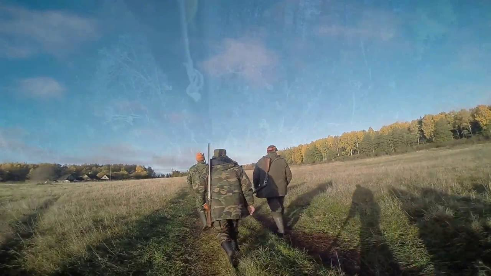
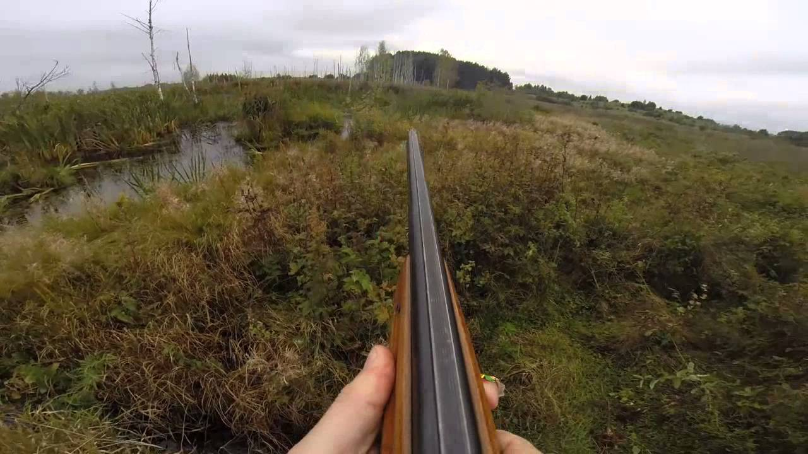

Medžioklė | Mano gyvenimo būdas!
2020.10.29 07:08
Įspėjame, kad šios svetainės turinio negalima žiūrėti neturint 18 metų! br / Ar jums bent 18 metų?
Taip Ne ×2020 Spalis 29 d. Ketvirtadienis +9°C Patirtis Medžioklės reikmenys Šunys Virtuvė Jaunākās ziņas Reklama Kontaktai Uždaryti ×
Žiūrėti dar kartą Rekomenduok šį straipsnį Daugiau galerijų Sumedžiotas šakalas Žurnalistas Rolandas Barysas Suomijos medžioklės takuose Spausdintos žąsys 2020 Spalis 29 d. Ketvirtadienis +9°C Reklama Kontaktai Patirtis Medžioklės reikmenys Šunys Virtuvė Jaunākās ziņas NOT google-places-scripts.desktop-all-fons1 ŽM Žurnalas Medžioklė Patirtis Rekomendacijos medžioklėms Covid-19 pandemijos metu Reportažas 22 valandos KŠ Kataryna Šterna Patirtis Latvijoje prie Ventspilio sumedžiotas šakalas Išskirtinis 22 valandos ŽM Žurnalas Medžioklė Patirtis Lietuvoje mažėja teritorijų, kuriose taikomi griežčiausi apribojimai dėl AKM Išskirtinis 1 diena ŽM Žurnalas Medžioklė Patirtis Afrika. Dramblių nebus leidžiama gaudyti zoologijos sodams 1 diena ŽM Žurnalas Medžioklė Patirtis Per daug elnių? 1 diena IB Indulis Burka Medžioklės reikmenys Hornady. Amerikietis – tikslus, patikimas ir… už malonią kainą Išskirtinis 1 diena ŽM Žurnalas Medžioklė Medžioklės reikmenys Pagarba ir patikimumas – CZ 557 LUX Išskirtinis 2 dienos ŽM Žurnalas Medžioklė Patirtis Pareigūnams įkliuvęs medžiotojas į medžioklę vežėsi naktinio matymo prietaisą Reportažas 2 dienos LD Linda Dombrovska Medžioklės reikmenys Kokią kamerą pasirinkti? Išskirtinis 3 dienos
Populiariausi straipsniai
ŽM Žurnalas Medžioklė Patirtis Rekomendacijos medžioklėms Covid-19 pandemijos metu Reportažas 22 valandos ŽM Žurnalas Medžioklė Patirtis Pareigūnams įkliuvęs medžiotojas į medžioklę vežėsi naktinio matymo prietaisą Reportažas 2 dienos KŠ Kataryna Šterna Patirtis Nekokybiškos jaunuolynų tvoros – mirtini spąstai gyvūnams Išskirtinis 3. kovas, 2020 KŠ Kataryna Šterna Medžioklės reikmenys Ypač patogūs HART Lekanda Išskirtinis 22. birželis, 2020 KŠ Kataryna Šterna Patirtis Latvijoje prie Ventspilio sumedžiotas šakalas Išskirtinis 22 valandos ŽM Žurnalas Medžioklė Šunys Draugiškas ir lengvai dresuojamas vokiečių jagdterjeras 24. kovas, 2020Patirtis
ŽM Žurnalas Medžioklė Patirtis Rekomendacijos medžioklėms Covid-19 pandemijos metu Reportažas 22 valandos KŠ Kataryna Šterna Patirtis Latvijoje prie Ventspilio sumedžiotas šakalas Išskirtinis 22 valandos ŽM Žurnalas Medžioklė Patirtis Lietuvoje mažėja teritorijų, kuriose taikomi griežčiausi apribojimai dėl AKM Išskirtinis 1 diena ŽM Žurnalas Medžioklė Patirtis Afrika. Dramblių nebus leidžiama gaudyti zoologijos sodams 1 diena ŽM Žurnalas Medžioklė Patirtis Per daug elnių? 1 diena ŽM Žurnalas Medžioklė Patirtis Pareigūnams įkliuvęs medžiotojas į medžioklę vežėsi naktinio matymo prietaisą Reportažas 2 dienos LD Linda Dombrovska Patirtis Miško kamera! 5 priežastys naudoti 3 dienos ŽM Žurnalas Medžioklė Patirtis Kiškių siaubas – miksomatozė 6 dienos Visi „Patirties“ straipsniaiMedžioklės reikmenys
IB Indulis Burka Medžioklės reikmenys Hornady. Amerikietis – tikslus, patikimas ir… už malonią kainą Išskirtinis 1 diena ŽM Žurnalas Medžioklė Medžioklės reikmenys Pagarba ir patikimumas – CZ 557 LUX Išskirtinis 2 dienos LD Linda Dombrovska Medžioklės reikmenys Kokią kamerą pasirinkti? Išskirtinis 3 dienos LD Linda Dombrovska Medžioklės reikmenys Levenhuk Karma PRO 10×50 – kokybiška staigmena Išskirtinis 6 dienos LD Linda Dombrovska Medžioklės reikmenys Kolimatorius Blaser RD20 Išskirtinis 12. spalis, 2020 Visi „Medžioklės reikmenų“ straipsniaiŠunys
KŠ Kataryna Šterna Šunys Gyvūno ausys virškinimui skatinti Išskirtinis 6 dienos KŠ Kataryna Šterna Šunys Mažytis, vikrus, universalus: rusų spanielis Išskirtinis savaitė ŽM Žurnalas Medžioklė Šunys Lietuvos skalikų augintojų sąjungos naujienos 12. spalis, 2020 Visi temos straipsniaiVirtuvė
KŠ Kataryna Šterna Virtuvė Rūkytos bebrų uodegos Išskirtinis 19. spalis, 2020 KŠ Kataryna Šterna Virtuvė Mėsa avies skrandyje… duobėje Išskirtinis 18. rugsėjis, 2020 KŠ Kataryna Šterna Virtuvė Reaktyvinė bebrienė Išskirtinis 12. rugsėjis, 2020 Visi „Virtuvės“ straipsniai Copyright: AS Latvijas Mediji 2020. Visos teisės saugomos. Privatumo politikaJūsų naršyklė Safari yra pasenusi! Rekomenduojame atsinaujinti, kad matytumėte visą šios svetainės turinį. Arba galite naudoti kitą populiarią naršyklę, pvz., Google Chrome ar Firefox .
- Superkompaktiškas termovizorius AXION | Medžioklė
- Ančių Medžioklė - Kur pavalgyti? Maisto apžvalgos, kritika ...
- Filmai internetu, filmai online, nemokami filmai
- Medžioklė / The Hunt (2020) online
- Medžioklė - Ūkininko patarėjas
- Prasideda akcija „Medžioklė“ | Miske.lt
- Medžioklė / The Hunt 2020 online lietuvių kalba
- Medžioklė / The Hunt (2020) » Filmai ir serialai online ...
- Medžioklė - vertimai, sinonimai, gramatika, statistika ...
- Žiūrėti Raudonojo Spalio Medžioklė Online nemokamai
- Superkompaktiškas termovizorius AXION | Medžioklė
Medžioklė / The Hunt (2012) BDRip. Kraujas ir šokoladas. Dramos, Romantiniai, Fantastiniai, Siaubo, Filmai. 2007. 1 val 38 min. Kraujas ir šokoladas / Blood and Chocolate (2007) DVDRip.
- Ančių Medžioklė - Kur pavalgyti? Maisto apžvalgos, kritika ...
GERAS FILMAS Medžioklė / The Hunt 2020 online lietuvių kalba nemokamai HD kokybė. Žiūrėkite naujausią filmą NEMOKAMAI. Vienas žiurimiausių filmų Lietuvoje.
- Filmai internetu, filmai online, nemokami filmai
Gero termovizoriaus reikėtų kiekvienam medžiotojui, norinčiam medžioti ne tik sėkmingai, bet ir etiškai. Jis padeda prieš šūvį įsitikinti, ar prie viliojimo vietos priėjusios šernės aukštoje žolėje neseka jaunikliai, kiek apskritai bandoje šernų, kuris didesnis, kuris mažesnis. Su Axion gyvūną galima įžiūrėti ir per gana tankius krūmus, tad galima pasirengti jo ...
- Medžioklė / The Hunt (2020) online
Filmas sukurtas pagal 1984 m. JAV išleistą (ir išverstą į lietuvių kalbą) Tomo Clancy knygą „Raudonojo spalio“ medžioklė“, kuri tapo bestseleriu. Romanas ir filmas sukurti pagal tikrus įvykius.
- Medžioklė - Ūkininko patarėjas
Ančių Medžioklė - maisto apžvalgos, vertinimai ir rekomendacijos. Kažkaip pagalvojau, kad reikėtų prisiminti praėjusį šeštadienį praūžusią We Will Grill fiestą.
- Prasideda akcija „Medžioklė“ | Miske.lt
Prasideda akcija „Medžioklė“ Vakar Aplinkos apsaugos departamentas tauriųjų elnių ir briedžių apsaugai stiprinti intensyviausiu jų rujos metu pradėjo akciją „Medžioklė“. Mat rujodami šie žvėrys įnirtingai ieško naujų teritorijų, patelių, varžovų, todėl nėra tokie budrūs ir gali tapti lengvu brakonierių grobiu.
- Medžioklė / The Hunt 2020 online lietuvių kalba
Miske.lt naujienos medžiotojams, straipsniai apie medžioklę, medžioklės vaizdo įrašai, medžioklės kalendorius, medžioklės įstatymai ir komentarai.
- Medžioklė / The Hunt (2020) » Filmai ir serialai online ...
Vaizdo įrašas pilno filmo "Medžioklė (2020)" įsijungia geroje kokybėje FULL HD 720 ir 1080 nemokamai, be registracijos. Žiūrėti Treileris. Filmas prasidės po trumpos reklamos * Brangūs lankytojai, reklama leistuve nuo mūsų nepriklauso. Atsiprašome...
- Medžioklė - vertimai, sinonimai, gramatika, statistika ...
Filmai internetu ir filmai online. Naujausi serialai, parduotas gyvenimas online, suzeisti pauksciai online
- Žiūrėti Raudonojo Spalio Medžioklė Online nemokamai
Medžioklės reikmenys medžioklė, žvejyba. X. Dėl geresnės Skelbiu.lt paslaugų kokybės naudojame slapukus (angl. cookies). Naršydami toliau, patvirtinate, kad sutinkate su slapukais. Tai bet kada galėsite atšaukti, pakeisdami nustatymus. Skelbiu.lt slapukų politika.
Medžioklė / The Hunt (2012) BDRip. Kraujas ir šokoladas. Dramos, Romantiniai, Fantastiniai, Siaubo, Filmai. 2007. 1 val 38 min. Kraujas ir šokoladas / Blood and Chocolate (2007) DVDRip.
GERAS FILMAS Medžioklė / The Hunt 2020 online lietuvių kalba nemokamai HD kokybė. Žiūrėkite naujausią filmą NEMOKAMAI. Vienas žiurimiausių filmų Lietuvoje.
Gero termovizoriaus reikėtų kiekvienam medžiotojui, norinčiam medžioti ne tik sėkmingai, bet ir etiškai. Jis padeda prieš šūvį įsitikinti, ar prie viliojimo vietos priėjusios šernės aukštoje žolėje neseka jaunikliai, kiek apskritai bandoje šernų, kuris didesnis, kuris mažesnis. Su Axion gyvūną galima įžiūrėti ir per gana tankius krūmus, tad galima pasirengti jo ...
Filmas sukurtas pagal 1984 m. JAV išleistą (ir išverstą į lietuvių kalbą) Tomo Clancy knygą „Raudonojo spalio“ medžioklė“, kuri tapo bestseleriu. Romanas ir filmas sukurti pagal tikrus įvykius.
Ančių Medžioklė - maisto apžvalgos, vertinimai ir rekomendacijos. Kažkaip pagalvojau, kad reikėtų prisiminti praėjusį šeštadienį praūžusią We Will Grill fiestą.
Prasideda akcija „Medžioklė“ Vakar Aplinkos apsaugos departamentas tauriųjų elnių ir briedžių apsaugai stiprinti intensyviausiu jų rujos metu pradėjo akciją „Medžioklė“. Mat rujodami šie žvėrys įnirtingai ieško naujų teritorijų, patelių, varžovų, todėl nėra tokie budrūs ir gali tapti lengvu brakonierių grobiu.
Miske.lt naujienos medžiotojams, straipsniai apie medžioklę, medžioklės vaizdo įrašai, medžioklės kalendorius, medžioklės įstatymai ir komentarai.
Vaizdo įrašas pilno filmo "Medžioklė (2020)" įsijungia geroje kokybėje FULL HD 720 ir 1080 nemokamai, be registracijos. Žiūrėti Treileris. Filmas prasidės po trumpos reklamos * Brangūs lankytojai, reklama leistuve nuo mūsų nepriklauso. Atsiprašome...
Filmai internetu ir filmai online. Naujausi serialai, parduotas gyvenimas online, suzeisti pauksciai online
Medžioklės reikmenys medžioklė, žvejyba. X. Dėl geresnės Skelbiu.lt paslaugų kokybės naudojame slapukus (angl. cookies). Naršydami toliau, patvirtinate, kad sutinkate su slapukais. Tai bet kada galėsite atšaukti, pakeisdami nustatymus. Skelbiu.lt slapukų politika.
 